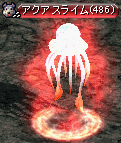
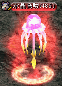
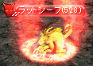
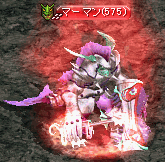
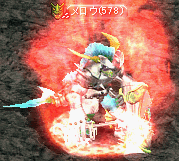
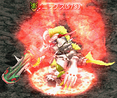
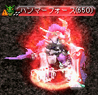

異能体モンスター
・通常のモンスターよりもステータス・HP・経験値が倍程度ある強化モンスターです。・特別なエフェクトとともに出現します。以下の座標周辺に多数出現します。
・通常モンスターより強く、PTボスモンスターより弱い程度の能力です。狩場の繋ぎとして使われています。
・リポップ時間は通常のモンスターと同様で30秒程度です。
・異能体モンスターは全てEx系統。ブラックファイヤー系列のモンスターはZin系統です。
| 出現マップ | Lv | 異能体モンスター |
|---|---|---|
| スパインホール地下 Ｂ２ マップ全域 |
485～490 |  |
| 485～490 |  | |
| 呪いを受けたミズナの洞窟 / 小さな洞窟 (29.87)周辺 |
515～520 |

|
| 515～520 |

|
|
| 呪いを受けたミズナの洞窟 / 泉の水 (92.21)周辺 |
520～523 |

|
| 523～525 |

|
|
| 呪いを受けたミズナの洞窟 / 宝石の部屋 (69.14)周辺 |
525～530 |  |
| 名も無き遺跡 Ｂ１ (102.39)周辺 |
547～552 |

|
| ゴールド・スワンプ洞窟 B3 (50.62)周辺 |
575～576 |  |
| 577～578 |  | |
| 579～580 |  | |
| ガルカス悪魔軍集結地 Ｂ２ (205.212)周辺 |
625～650 (非アクティブ) |
|
| 625～650 (非アクティブ) |
 |